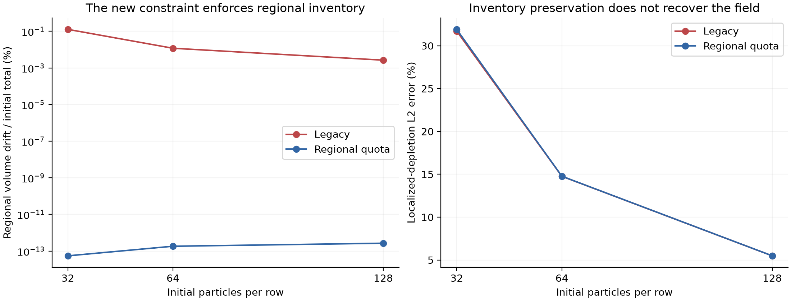
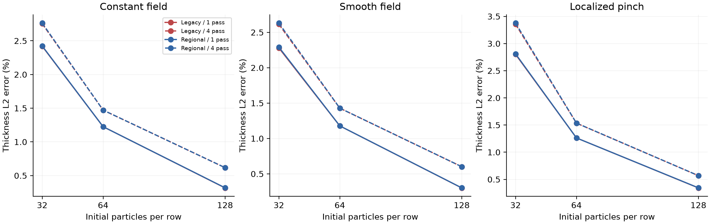
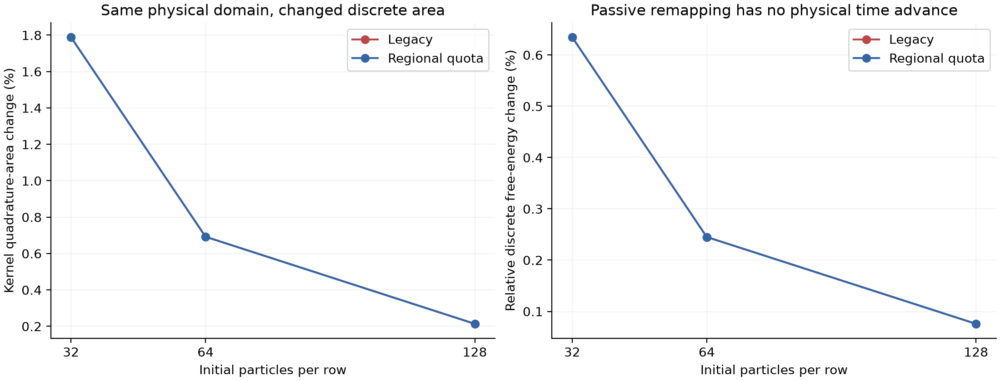
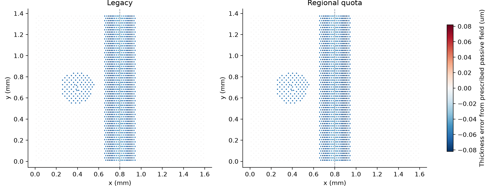

分区守恒仍不够：
一次未通过验证的接口原型
从真实运动膜的重网格频率问题出发，先隔离被动重映射，再尝试分区库存约束，最后检查与现有局部平衡模型的相容性。
被动场与常速度配对对照
最新相关原生检查通过
运动膜候选原型
候选原型未通过长于预检窗口的运动膜验证，不能作为C1完成或可信排液方法。默认算法保持原样；两代原型及失败记录均保留。守恒通过不替代场精度、可行域、动力学稳定性和能量一致性。
原型试了什么
旧算法对所有受影响粒子统一归一化库存；第一版增加分区约束，要求纯重映射前后的各分区V、S、B不变。它确实消除了跨区库存漂移，但这不是一个能量一致或几何一致的插值。第二版在同一约束后调用已有的瞬时局部平衡，保持每粒子2S+B并恢复表面—体相分配；没有新增交换速率或物理系数。
守恒与局部场误差是两件事


| Case | 区域液量漂移 | h L2误差 | 变薄量L2误差 | 表面浓度L2误差 | 离散自由能变化 |
|---|---|---|---|---|---|
| n32_f2_r0_c4 | 0.1274% | 3.355% | 31.706% | 2.867% | 0.6347% |
| n32_f2_r1_c4 | 5.475e-14% | 3.377% | 31.910% | 2.878% | 0.6348% |
| n64_f2_r0_c4 | 0.01184% | 1.534% | 14.762% | 1.480% | 0.2451% |
| n64_f2_r1_c4 | 1.829e-13% | 1.536% | 14.774% | 1.481% | 0.2451% |
| n128_f2_r0_c4 | 0.002646% | 0.568% | 5.484% | 0.607% | 0.0758% |
| n128_f2_r1_c4 | 2.672e-13% | 0.569% | 5.489% | 0.607% | 0.0758% |
几何一致性是下一道关口
如果常厚度h0在纯重映射前后严格保持，同时液量也保持，就必须有Σ Anew = Σ Aold。当前核求积面积随点集重组而改变，因此只靠库存归一化一般不能同时满足常场再现。分区库存约束也不能自动修复这个矛盾。


真实运动膜：短跑通过不能代替后续验证
第一版2 μm预检在膜区出现超过Langmuir可行域的表面浓度，已隔离并跳过50 ms矩阵。第二版局部平衡修正通过了两组5 ms预检，但后续运动膜长窗仍出现异常退出/失效，未接受为新边界处理。失败算例的提前轨迹全部视为隔离记录，不作物理预测。
| 版本 | Case | 返回码 | Newton失败计数 | 整份保存字段可行 | 结论 |
|---|---|---|---|---|---|
| V1 | legacy_control | 0 | [['0', '0']] | True | PASS / short or control |
| V1 | candidate_thin_preflight | 0 | [['0', '0']] | False | QUARANTINED |
| V1 | candidate_thick_preflight | 0 | [['0', '0']] | True | PASS / short or control |
| V2 | eq_legacy_control | 0 | [['0', '0']] | True | PASS / short or control |
| V2 | eq_thin_preflight | 0 | [['0', '0']] | True | PASS / short or control |
| V2 | eq_thick_preflight | 0 | [['0', '0']] | True | PASS / short or control |
| V2 | eq_thin_dt1 | 3221225620 | [] | False | QUARANTINED |
| V2 | eq_thick_dt1 | 3221225620 | [] | False | QUARANTINED |
| V2 | eq_thick_dt0p5 | 3221225620 | [] | False | QUARANTINED |
| V2 | eq_thick_dt0p25 | 3221225620 | [] | False | QUARANTINED |
整份字段检查包含固定框架的辅助状态；它不等同于移动膜区的浓度检查。原型1的膜区违规已单独核对；原型2长窗的异常退出本身就不满足验收。缺少正常结束行时不把缺失Newton计数解释为零。
追加独立检验：常速度与动能
对同一36组几何/标量场，加入统一0.01 m/s平移速度，仍不推进动力学。几何、标量场及重网格事件与零速度配对记录一致。总动量相对误差≤2.23e-14，但常速度没有保持。

例如64行粒子的旧算法，速度RMS误差9.385%，动能增加0.881%。两种算法目前都保持原粒子动量再按新质量换算速度；总动量守恒因此不保证速度场再现。
这个反例确认了必要的被动一致性条件不满足；它尚未单独证明全部排液差异的成因。后续接口转移必须同时处理质量、动量和几何支撑，不能只追加库存归一化或选择重网格周期。
下一步仍是实现正确的局部接口
- 保留默认方法；不以调节重网格频率或初态选择“好看”结果。
- 检查几何控制体积与跨区重叠转移，使常场、库存和局部支撑在同一几何表示下相容，再尝试运动局部区域。
- 通过这些基础检查后，继续双向液量/表活交换、边界功与空间/时间收敛。完整C1目标尚未完成。